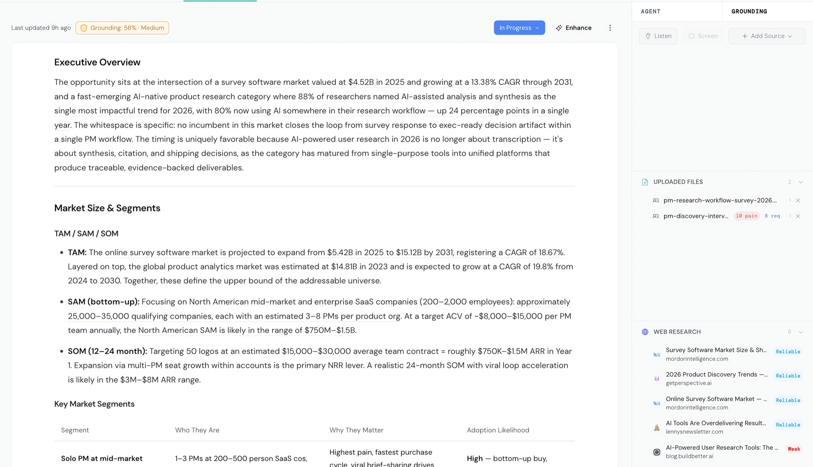
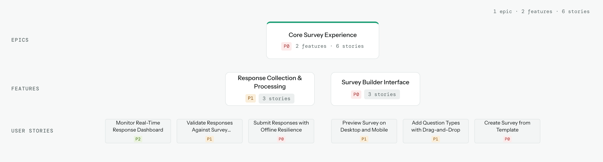
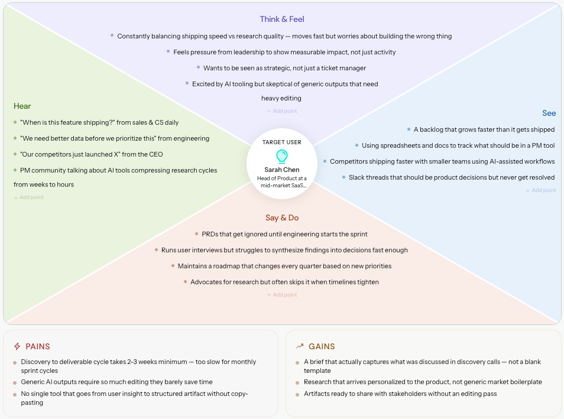

Market Scan
The problem: optimization decisions were made on opinion. The bet: put performance and compliance evidence in front of the marketer before the change, not after. My role: I lead the product, which was live when I joined.
Director of Product · Persado
I lead growth and retention product for enterprise financial services at Persado. Most of my work is deciding where product investment earns its place, then proving the return in the numbers customers bring to their renewals.
Selected outcomes · 2015–2026
My role: program owner. Scaled a customer program to 400+ accounts, and the pipeline converted to closed business.
My role: architecture and the commercial model. One integration with VONQ and LinkedIn, reused across three ATS platforms instead of three separate builds.
My role: product lead on the recovery. After a post-acquisition integration failure, a Fortune 100 customer signed a two-year, $880K enterprise deal and dropped its termination-for-convenience clause.
My role: operating-model owner at Persado. Built the cadence with engineering, then the enablement that keeps sales, marketing, and customers in step.
In their words
“Super important account, and that's such a save. Epic save!”
“Doing a fantastic job… So proud of, and also in awe of all of you.”
“Pragmatic, do the right thing, good team player.”
Current portfolio · Persado
Each product de-risks a different decision in the same chain: which assets to change, which accounts to pursue, and whether the change paid off.
Explore my current roleThe problem: optimization decisions were made on opinion. The bet: put performance and compliance evidence in front of the marketer before the change, not after. My role: I lead the product, which was live when I joined.
The problem: acquisition and win-back effort went to accounts that were never going to convert. The bet: scan the marketing assets of roughly 800 U.S. banks, score them, and turn each finding into a personalized outreach draft. My role: my idea, built end to end. I'm now running the outbound campaign it powers.
The problem: most customers experience Persado through our team, not the product, so they rarely see the value we deliver. The bet: send that value to them on a schedule, and to the business units that don't work with us yet. My role: my idea and the first build. Engineering took it to production.
How I run product
Every idea is a bet with the company's money, whether it comes from the CEO, a customer, or my own team. Product's job is to improve the odds before that money is committed.
More about how I thinkPricing and the commercial model for a $1.76M shared service were designed with the platform, not after it.
I test demand before engineering commits. At Employ, an AI-built MVP for application fraud detection drew 300+ registrations and 20–40 inbound demo requests at launch. At Persado, I built the first version of the ROI & Value Dashboard myself, in the production codebase, before handing it to engineering to ship.
I weigh short-term conversion work against the platform work that makes it repeatable.
Persado's ROI & Value Dashboard sends customers scheduled value summaries, and the same summary opens doors in business units we don't serve yet.
Across all four, I close the gaps between product, engineering, marketing, and sales. When we have something valuable, product should never be the reason a customer doesn't have it yet.
Independent products
I build products independently to run the whole loop myself: size the bet, test it cheaply, and see what the market will pay for. One rule runs through all of them: automate the assembly, never the judgment.



For product teams working across disconnected research, strategy, and delivery documents. I shaped and launched a workspace that keeps product context, cited research, and planning artifacts connected.
The product decision. Carry the evidence behind a decision into the work that follows it.
ILLUSTRATIVE WORKFLOW
A clearer
starting point.
Review scope, quantities, and pricing before submission.
Illustrative workflow · See actual output in the public sample.
For contractors preparing bids from dense plans and RFPs. I defined a focused product that turns the documents into an organized first pass: a project summary, materials checklist, and editable proposal draft.
The product decision. Support preparation and review while keeping final quantities, pricing, and submission with the contractor.
Also building: Arclo Pro and Loupe.
Start a conversation
Open to senior product leadership roles, and to conversations about AI strategy and growth.
Email me